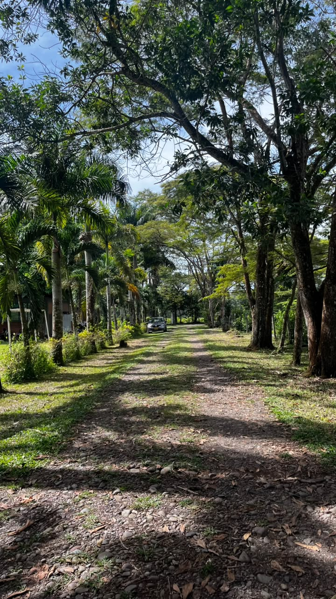
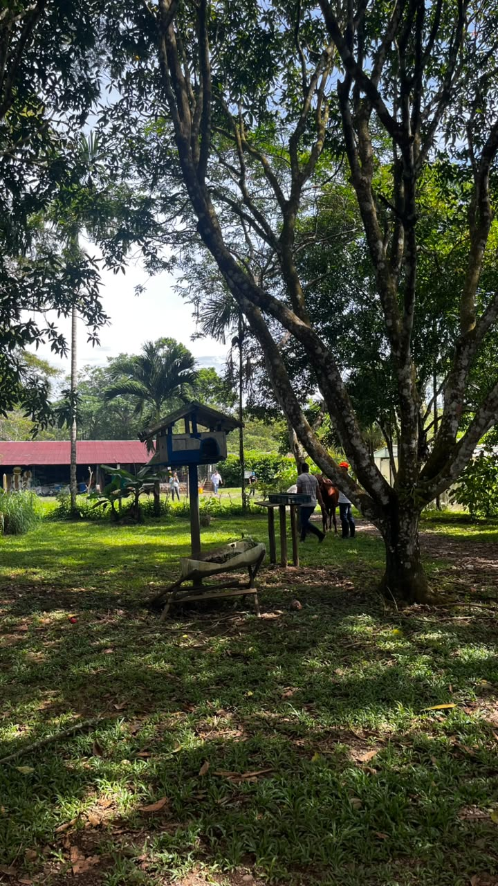
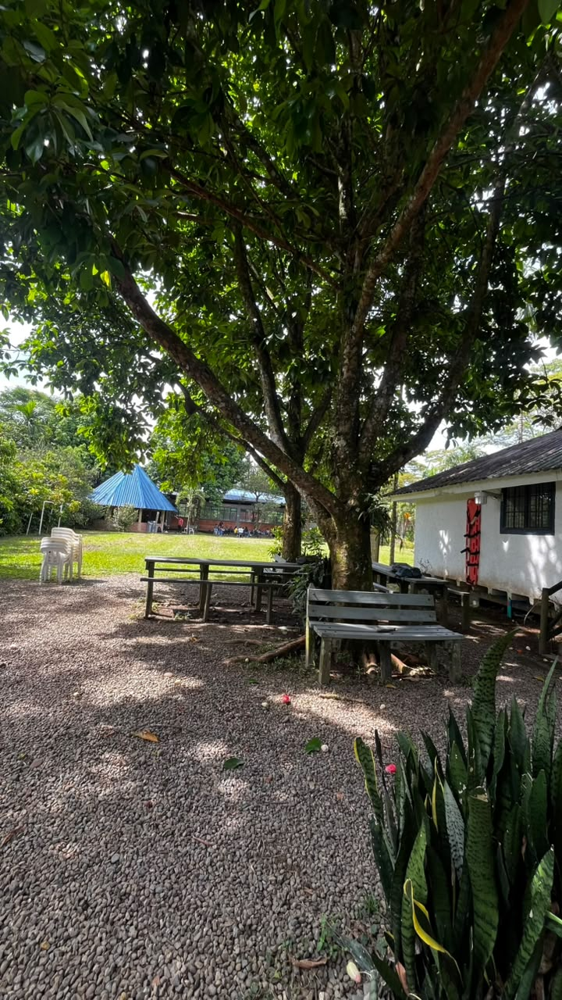
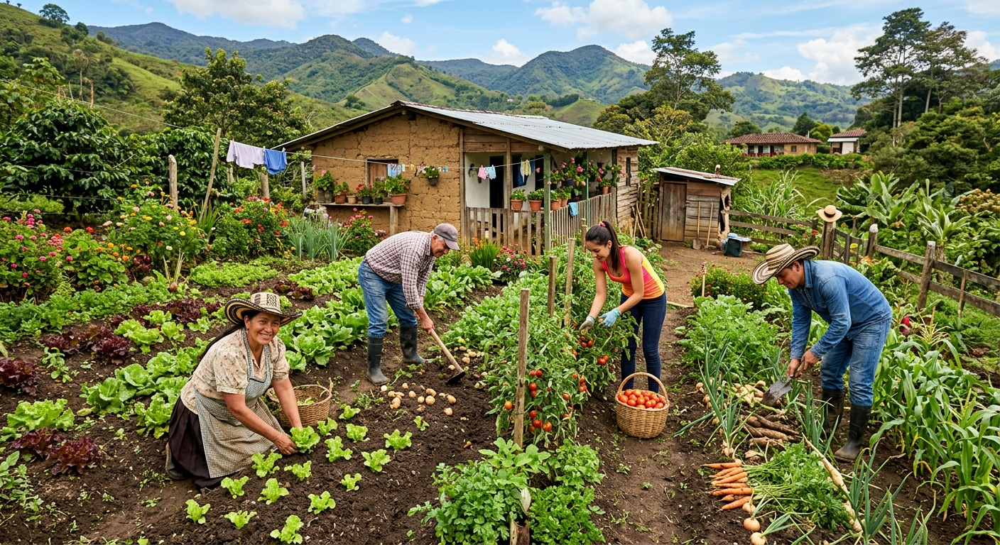
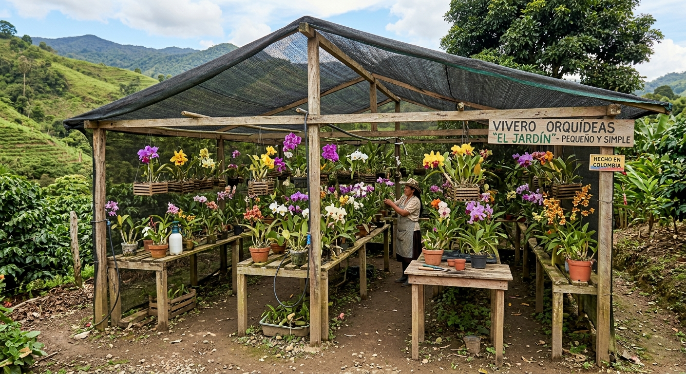
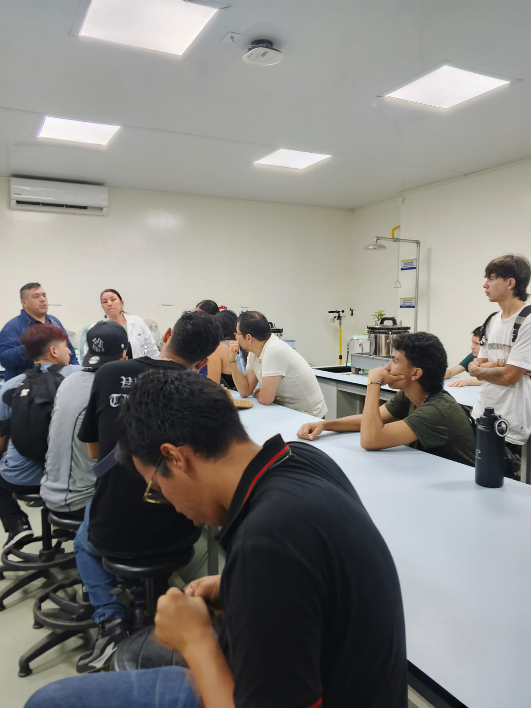
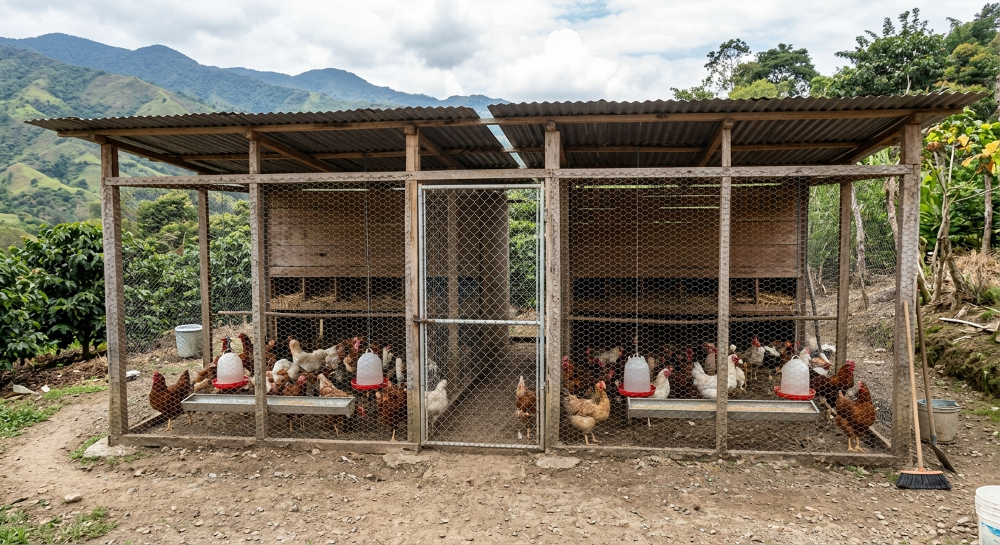

Entre campos y cultivos
Miradas de la naturaleza
Los detalles del campo nos recuerdan que cada semilla, cada hoja y cada paisaje tienen algo que contar.

Entre campos y cultivos

Entre campos y cultivos

Entre campos y cultivos

Sembrar un nuevo comienzo

La vida en el vivero

Investigando para el mundo

animales